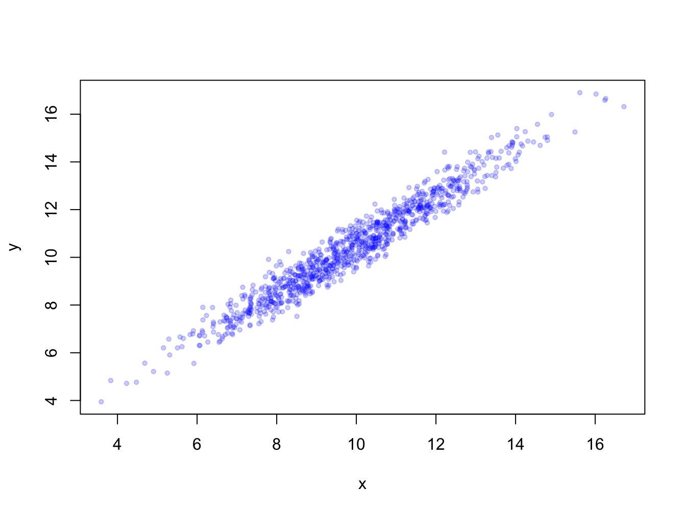
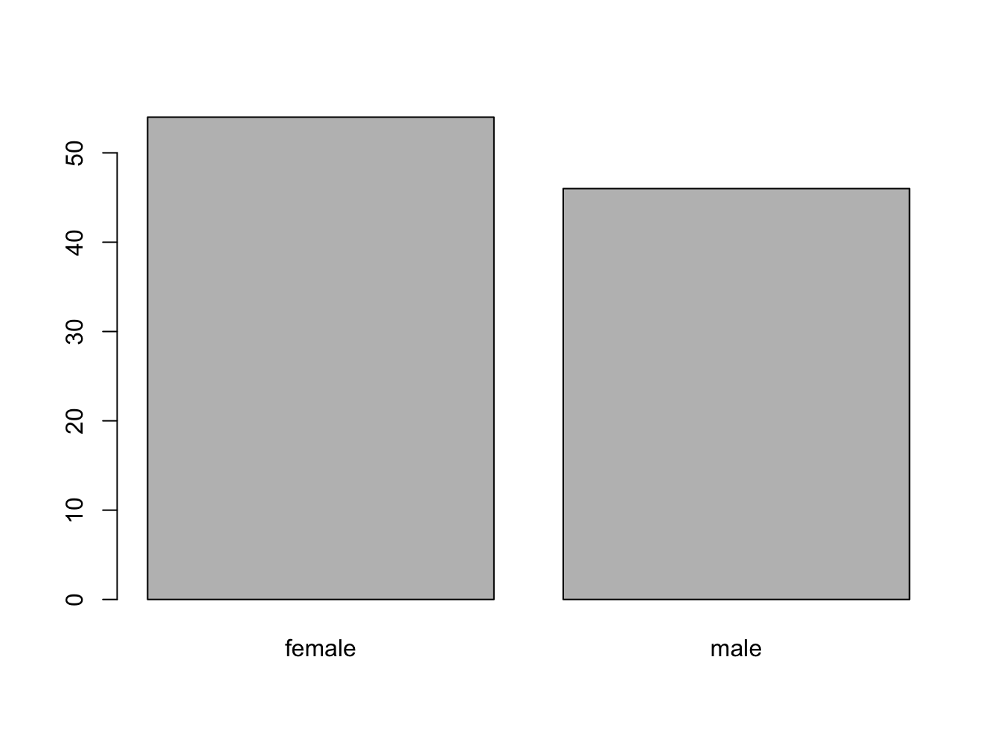
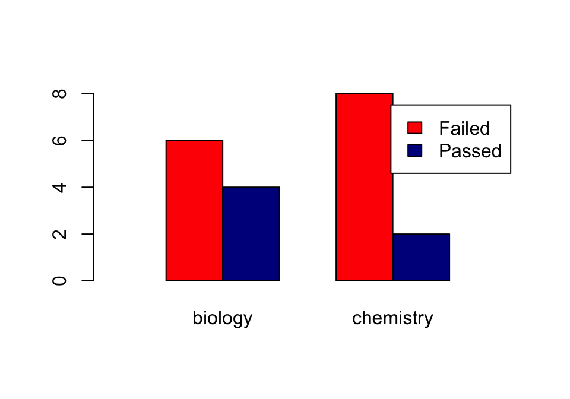
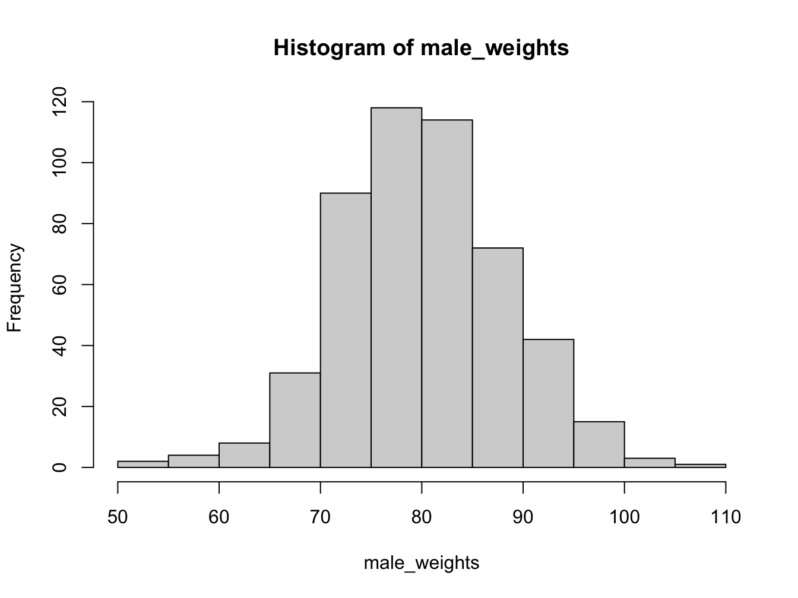
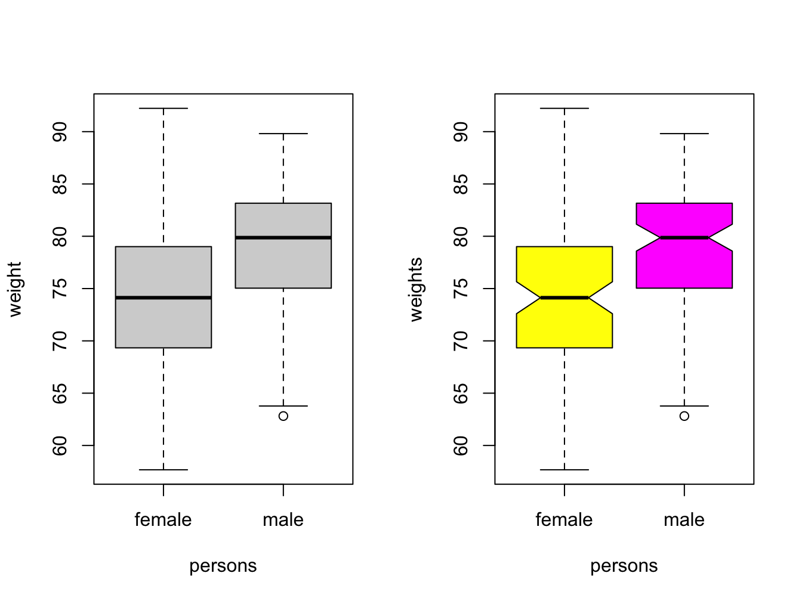
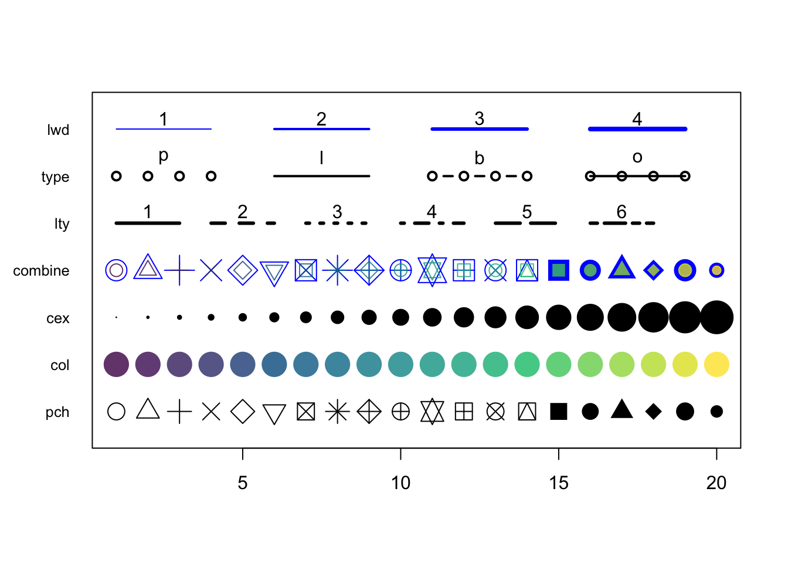

Chapter 4 Basic R - plotting
4.1 Basic embedded plot types
Looking at numbers is boring - people want to see pictures! Doing analyses without visualizations is like only listening to a movie.
There are a few plot types supported by base R that deal with (combinations of) vectors:
- scatter (or line-) plot
- barplot
- histogram
- boxplot
We’ll only look at the bare basics in this chapter because we are going to do it for real with package ggplot2 in the next course.
4.1.1 Scatter and line plots
Meet plot() - the workhorse of R plotting.
time <- c(1, 2, 3, 4, 5, 6)
response <- c(0.09, 0.30, 0.41, 0.48, 0.72, 1.12)
plot(x = time, y = response)
Figure 4.1: Here is a nice figure!
The function plot is used here to generate a scatter plot. It may generae other types of figures, depending on its input as we’ll see later.
Formula notation
Instead of passing an x = and y = set of arguments, it is also possible to call the plot fuction with a formula notation:
plot(response ~ time)
You can read response ~ time as response as a function of time. This is a nice, readable alternative in this case, but for many functions it is the only or preferred way to specify the relationship you want to investigate.
Plot decorations
Plots should always have these decorations:
- Axis labels indicating measurement type (quantity) and its units. E.g. ‘[Mg] (mq/ml)’ or ‘Heartrate (bpm)’.
- If multiple data series are plotted: a legend
- Either a title or a figure caption, depending on the context.
The first plots of this chapters were very bare (and a bit boring to look at): the plot has no axis labels (quantity and units) and no decoration whatsoever. By passing arguments to plot() you can modify or add many features of your plot. Basic decoration includes
- adjusting markers (
pch = 19,col = "blue") - adding connector lines (
type = "b") or removing points (type = "l") - adding axis labels and title (
xlab = "Time (hours)",ylab = "Systemic response",main = "Systemic response to agent X") - adjusting axis limits (
xlim = c(0, 8))
This is not an exhaustive listing; these are listed in the last section of this chapter.
Here is a more complete plot using a variety of arguments.
plot(x = time, y = response, pch = 19, type = "b", xlim = c(0, 8),
xlab = "Time (hours)", ylab = "Systemic response (a.u.)",
main = "Systemic response to agent X", col = "blue")Adjusting the plot symbol
When you have many data points they will overlap. Using transparency with the rgb(,, alpha=) color definition and/or smaller plot symbols (cex=) solves this.
x <- rnorm(1000, 10, 2); y <- x + rnorm(1000, 0.5, 0.5)
plot(x, y, pch = 19, cex = 0.6,
col = rgb(red = 0, green = 0, blue = 1, alpha = 0.2))
4.1.2 Barplots
Barplots can be generated in several ways:
- By passing a factor to
plot()- it will generate a barplot of level frequencies. This is a shorthand forbarplot(table(some_factor)). - By using
barplot(). The advantage of this is that accepts some graphical parameters that are not relevant and accepted byplot(), such asbeside =,height =,width =and others (type?barplotto see all).
Here is an example:
persons <- as.factor(sample(c("male", "female"), size = 100, replace = T))
plot(persons)
barplot() with a vector
The function barplot() can be called with a vector specifying the bar heights (frequencies), or a table object.
frequencies <- c(22, 54, 12, 29)
barplot(frequencies, names = c("one", "two", "three", "four"))With a table object:
table(persons)## persons
## female male
## 46 54barplot(table(persons))
barplot() with a 2D table object
Suppose you have this data:
set.seed(1234)
course <- rep(c("biology", "chemistry"), each = 10)
passed <- sample(c("Passed", "Failed"), size = 20, replace = T)
tbl <- table(passed, course) # the order matters!
tbl## course
## passed biology chemistry
## Failed 6 8
## Passed 4 2The set.seed(1234) makes the sampling reproducible, although that sounds really unlogical. Discussing pseudorandom sampling is not within the scope of this course however.
You can create a stacked bar chart like this.
barplot(tbl,
col = c("red", "darkblue"),
xlim = c(0, ncol(tbl) + 2),
legend = rownames(tbl))The xlim = setting is a trick to get the legend beside the plot.
Using the beside = TRUE argument, you get the bars side by side:
barplot(tbl,
col=c("red", "darkblue"),
beside = TRUE,
xlim=c(0, ncol(tbl)*2 + 3),
legend = rownames(tbl))
Later, we’ll see another data structure to feed to barplot: the matrix.
4.1.3 Histograms
Histograms help you visualise the distribution of your data.
male_weights <- c(rnorm(500, 80, 8)) ## create 500 random numbers around 80
hist(male_weights)
Using the breaks argument, you can adjust the bin width. Always explore this option when creating histograms!
par(mfrow = c(1, 2)) # make 2 plots to sit side by side
hist(male_weights, breaks = 5, col = "gold", main = "Male weights")
hist(male_weights, breaks = 25, col = "green", main = "Male weights")If you want a more detailed
4.1.4 Density plot as alternative to hist()
When you want a bit more fine-grained view of the distribution you can use a plot of a density function; by adding a polygon() you can even have some nice shading under the line:
plot(density(male_weights),
main = "A density plot of male weights",
col = "blue", lwd = 2)
polygon(density(male_weights), col="lightblue")4.1.5 Boxplots
This is the last of the basic plot types. A boxplot is a visual representation of the 5-number summary of a numeric variable: minimum, maximum, median, first and third quartile.
persons <- rep(c("male", "female"), each = 100)
weights <- c(rnorm(100, 80, 6), rnorm(100, 75, 8))
#print 6-number summary (5-number + mean)
summary(weights[persons == "female"])## Min. 1st Qu. Median Mean 3rd Qu. Max.
## 57.68 69.36 74.12 73.99 78.97 92.23Boxplots tell the same story as histograms, but are less precise. however, they are excellent when you want to show a series of subsets split over some variable.
par(mfrow = c(1, 2)) # make 2 plots to sit side by side
# create boxplots of weights depending on sex
boxplot(weights ~ persons, ylab = "weight")
boxplot(weights ~ persons, notch = TRUE, col = c("yellow", "magenta"))
Use varwidth = TRUE when you want to visualize the difference in group sizes.
4.1.6 Adding more data and a legend
When you have more than one data series to plot, add them using the function points(). You call this function after you created the primary plot. Since there are multiple lines you will also need a legend.
response2 <- c(0.07, 0.10, 0.17, 0.28, 0.46, 0.61)
plot(x = time, y = response, pch = 19, type = "b",
xlab = "Time (hours)", ylab = "Systemic response (a.u.)",
main = "Systemic response to agent X", col = "blue")
points(x = time, y = response2, col = "red", pch = 19, type = "b")
legend(x = 1, y = 1.0, legend = c("one", "two"), col = c("blue", "red"), pch = 19)The legend() function is very versatile. Have a look at the docs!
In its most basic form you pass it a position (x and y), series names, colors and plot character.
4.1.7 Helper lines and lm()
Adding helper lines can be used to aid your reader in grasping and interpreting your data story.
Use the function abline() for this.
There are four types of helper lines you might want to add to a figure:
- A horizontal line with
h =: indicate some y-threshold - A vertical line with
v =: indicate x-threshold or mean or some other statistic - A line with an intercept (
a =) and a slope (b =): often used to indicate some expected response, or diagonal x = y - A linear model, determined with the
lm()function. The linear model object actually contains an intercept and a slope value which is taken byabline().
In the following plot, these four basic helper lines are demonstrated:
plot(x = time, y = response, pch = 19, type = "b",
xlab = "Time (hours)", ylab = "Systemic response (a.u.)",
main = "Systemic response to agent X", col = "blue")
#horizontal line
abline(h = 0.3, lty = 2, lwd = 2, col = "red")
#vertical line
abline(v = 4, lty = 3, lwd = 2, col = "darkgreen")
#line with slope
abline(a = -0.1, b = 0.3, lwd = 2, col = "purple")
#linear model
abline(lm(response ~ time), lwd = 2, col = "maroon")
4.2 Graphical parameters to plot()
There are many parameters that can be passed to the plotting functions. Here is a small sample and their possible values.
series <- 1:20
plot(0, 0, xlim=c(1,20) , ylim=c(0.5, 7.5), col="white" , yaxt="n" , ylab="" , xlab="")
# the rainbow() function gives a nice palette across all colors
# or use hcl.colors() to specify another palette
# use hcl.pals() to get an overview of available pallettes
colors = hcl.colors(20, alpha = 0.8, palette = 'viridis')
#pch
points(series, rep(1, 20), pch = 1:20, cex = 2)
#col
points(series, rep(2, 20), col = colors, pch = 16, cex = 3)
#cex
points(series, rep(3, 20), col = "black" , pch = 16, cex = series * 0.2)
#overlay to create new symbol
points(series, rep(4, 20), pch = series, cex = 2.5, col = "blue")
points(series, rep(4, 20), pch = series, cex = 1.5, col = colors)
#lty
for (i in 1:6) {
points(c(-2, 0) + (i * 3), c(5, 5), col = "black", lty = i, type = "l", lwd = 3)
text((i * 3) - 1, 5.25 , i)
}
#type and lwd
for (i in 1:4) {
#type
points(c(-4, -3, -2, -1) + (i * 5), rep(6, 4),
col = "black", type = c("p","l","b","o")[i], lwd=2)
text((i * 5) - 2.5, 6.4 , c("p","l","b","o")[i] )
#lwd
points(c(-4, -3, -2, -1) + (i * 5), rep(7, 4), col = "blue", type = "l", lwd = i)
text((i * 5) - 2.5, 7.23, i)
}
#add axis
axis(side = 2, at = c(1, 2, 3, 4, 5, 6, 7),
labels = c("pch" , "col" , "cex" , "combine", "lty", "type" , "lwd" ),
tick = FALSE, col = "black", las = 1, cex.axis = 0.8)